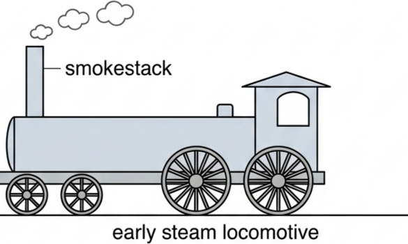
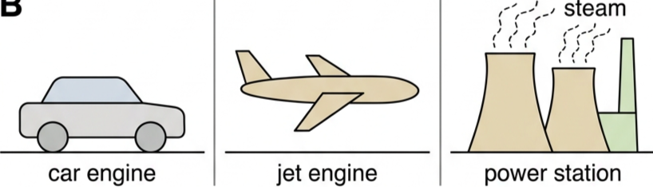
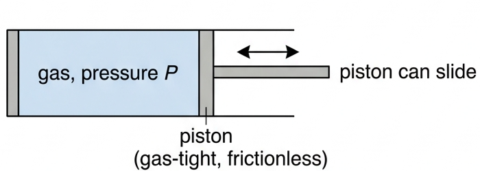
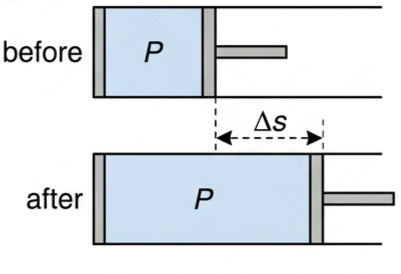
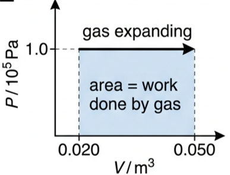
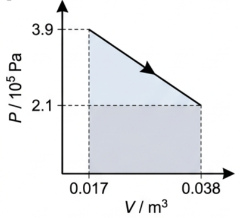
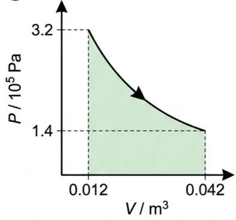
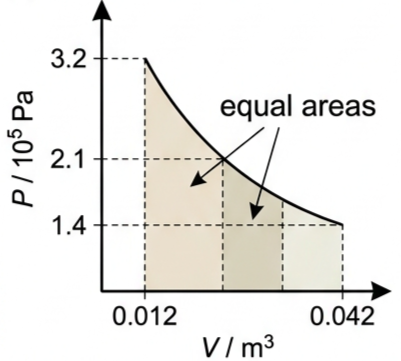
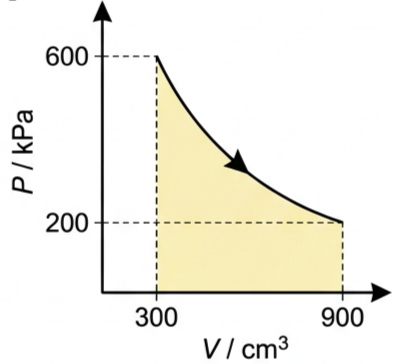
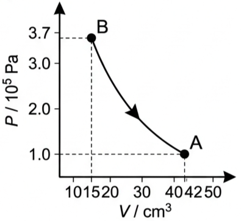

🚂 Hook – the machine that ended muscle power
Burning fuel to heat water into steam, and using that steam to make something move, had been understood for a very long time — but it took until the early eighteenth century for the first commercial steam engines to appear. About 100 years later, in 1825, George Stephenson built the engine Locomotion for the first public steam railway. About 200 years on, our world runs on devices that get useful mechanical work from a flow of thermal energy — heat engines in cars, boats, trains, planes, factories and power stations.

🌍 Heat engines and the birth of thermodynamics
We are surrounded by devices that get useful mechanical work from a flow of thermal energy transferred from a burning fuel — usually a fossil fuel. It is difficult to overstate the importance these devices have had on modern life. We are also very aware of the problems they bring: limited fossil-fuel resources, inefficient devices, pollution and global warming.

This branch of physics is thermodynamics. It grew out of a need to understand heat engines, but it now underpins a much wider understanding of internal energy, heat, temperature, work and pressure, and how they connect to the microscopic behaviour of particles.
📦 Systems, surroundings and reservoirs
A system is simply the thing we are studying — in this topic, a gas. A closed system allows energy to be transferred in or out as heat or work, but no mass can cross its boundary. Compare this with an isolated system, in which neither mass nor energy can be transferred in or out — the kind of system used when discussing conservation of momentum.
The surroundings are everything else — the gas container and the rest of the Universe. If part of the surroundings is deliberately designed to encourage thermal energy to flow into or out of it, we call it a (thermal) reservoir: a part of the surroundings kept at approximately constant temperature.

A thermodynamic system can be as complex as a rocket engine, planet Earth or a human body — but here we develop understanding using the behaviour of gases in heat engines.
⚙️ Work done when a gas expands: W = PΔV
First consider a gas expanding with no change in pressure — an isobaric change (\(\Delta P = 0\)). If the gas in the cylinder is given thermal energy, its pressure momentarily exceeds the pressure of the surroundings, so it pushes the piston outward, keeping the two pressures equal as it expands.

Work done by the gas in pushing back the surrounding air (assuming no friction):
because force = pressure × area. Since the change of volume \(\Delta V = A\Delta s\):
If work is done on the gas to reduce its volume, \(\Delta V\) and \(W\) both take negative values.

For this example:
⚖️ First law of thermodynamics: Q = ΔU + W
If an amount of thermal energy, \(+Q\), is transferred into a system, the system may gain internal energy, \(+\Delta U\), and/or expand and do work on the surroundings, \(+W\). Conservation of energy connects these three quantities:
This equation covers every possibility of expanding or compressing a gas, and/or supplying or removing thermal energy from it.
\((+120) = \Delta U + (+80)\)
\(Q = (+50) + (-150)\)
🌡️ Internal energy of an ideal monatomic gas
The internal energy of an ideal monatomic gas can be calculated from:
so changes in internal energy can be calculated from:
\(50 = 1.5 \times (3.4\times10^{23}) \times (1.38\times10^{-23}) \times \Delta T\)
📈 Reading work done off a PV diagram
| Graph type | Axes (X, Y) | Shape | What to read |
|---|---|---|---|
| Isobaric (constant pressure) | V / m³ · P / Pa | Horizontal straight line | Area = rectangle = \(P\Delta V\); \(+W\) if expanding, \(-W\) if compressing |
| Straight sloped line | V / m³ · P / Pa | Straight line, P and V both changing | Area = rectangle + triangle under the line; add the two areas |
| Curved line | V / m³ · P / Pa | Smooth curve, P falling as V rises (or vice versa) | Area under the curve must be estimated — equal-area rectangle, or strip method |
Work done when a gas changes pressure and/or volume can always be determined from the area under a PV diagram, whatever its shape.


✍️ Worked example B4.1 – areas under two PV graphs
Determine the work done in the two changes of state shown in Figs 6 and 7.
\(\left[\tfrac12(3.9-2.1)\times10^{5}\times(0.038-0.017)\right]\)
\(+\left[(0.038-0.017)\times2.1\times10^{5}\right]\)
🧮 Estimating the area under a curved PV graph
When the PV graph is curved, the exact area cannot be read from a simple shape. Divide it into narrow strips of equal width and treat each strip as a thin rectangle or trapezium; the total area is the sum of the strips.

🌍 Real-world: the cost of a heat-engine world
Every heat engine that powers a car, plane, ship or power station needs a continuous transfer of thermal energy from a burning fuel — almost always a fossil fuel. That dependence is why heat engines sit at the centre of the climate and resource problems discussed in Topic B.2: fossil fuels are finite, real engines are never perfectly efficient, and burning fuel produces pollution and greenhouse gases.
🚀 HL extension – why "monatomic" matters
\(\Delta U = \tfrac{3}{2}Nk_{\text{B}}\Delta T\) only holds for an ideal monatomic gas, where all the internal energy is translational kinetic energy of single atoms. A diatomic or polyatomic molecule can also rotate and vibrate, storing extra internal energy at the same temperature rise — so its internal energy changes by more than \(\tfrac{3}{2}Nk_{\text{B}}\Delta T\) for the same \(\Delta T\).
Challenge: for the same \(\Delta T\) and the same number of particles, would a diatomic gas need more or less thermal energy than a monatomic gas to produce that rise, at constant volume? (Answer: more — some of the energy supplied goes into rotational and vibrational modes as well as translational kinetic energy, so \(\Delta U\), and hence \(Q\), is larger for the same \(\Delta T\).)
⚠️ Trap corner – common mistakes
| Misconception | Correct view |
|---|---|
| \(Q\), \(\Delta U\) and \(W\) can be treated as always positive | Each has a sign that depends on direction: \(+Q\) in / \(-Q\) out, \(+\Delta U\) rise / \(-\Delta U\) fall, \(+W\) by the gas / \(-W\) on the gas |
| Isobaric means no work is done | Isobaric means constant pressure, not constant volume — the gas can still expand or contract, and \(W = P\Delta V\) is not zero |
| A curved PV graph has no defined work done | The work is still the area under the curve; it just has to be estimated, by an equal-area rectangle or the strip method, rather than read off a simple shape |
| "Closed" and "isolated" system mean the same thing | A closed system allows energy in/out (as heat or work) but not mass; an isolated system allows neither mass nor energy across its boundary |
Complete the statements:
✓ (b) The volume increased, so the work was done by the gas.
✓ \(\Delta V = -6.0\times10^{-6}\ \text{m}^3\) (the gas is compressed).
✓ New volume \(= 7.6\times10^{-5} - 6.0\times10^{-6} = 7.0\times10^{-5}\ \text{m}^3\).

✓ Width of the rectangle \(= (900-300) = 600\ \text{cm}^3 = 6.0\times10^{-4}\ \text{m}^3\).
✓ \(W \approx (3.8\times10^{5})(6.0\times10^{-4}) \approx 230\ \text{J}\), as required.
✓ \(Q = \Delta U + W = 0 + (+200) = +200\ \text{J}\) transferred into the gas.
✓ \(Q = \Delta U + W \Rightarrow (-30) = \Delta U + (-70)\)
✓ \(\Delta U = (+40)\ \text{J}\); the internal energy increased.
✓ \(W = (-40)\ \text{J}\).
✓ (b) The negative sign shows the work was done on the gas.
✓ \(\Delta U = 3.6\times10^{3}\ \text{J}\).
✓ (b) \(Q = \Delta U + W \Rightarrow 5600 = 3600 + W\)
✓ \(W = +2.0\times10^{3}\ \text{J}\), done by the gas (it expanded).
✓ \(\Delta T = 13.5\ \text{K}\), so final temperature \(= 302+13.5 = 316\ \text{K}\).
✓ (b) \(W = P\Delta V = (2.3\times10^{5})(380-220)\times10^{-6} = 37\ \text{J}\).
✓ (c) \(Q = \Delta U + W = 540 + 37\)
✓ \(Q = 577\ \text{J}\) transferred into the gas.
✓ (b) Volume increased, so work was done by the gas.
✓ (c) \(Q = \Delta U + W \Rightarrow 0.150 = \Delta U + 8.0\times10^{-5}\)
✓ \(\Delta U \approx 0.150\ \text{J}\) (the work term is negligible by comparison).
✓ (c) \(W = \left[1.0\times10^{5}\times(45-35)\times10^{-6}\right] + \left[\tfrac12\times0.2\times10^{5}\times(45-35)\times10^{-6}\right]\)
✓ \(W = 1.0 + 0.1 = 1.1\ \text{J}\).
✓ (d) \(Q = \Delta U + W \Rightarrow 1.82 = \Delta U + 1.1\)
✓ \(\Delta U = 0.72\ \text{J}\).

✓ (b) \(P_{\text{B}}V_{\text{B}} = 3.7\times10^{5}\times15 = 5.6\times10^{6}\); \(P_{\text{A}}V_{\text{A}} = 1.0\times10^{5}\times42 = 4.2\times10^{6}\) — not equal, so Boyle's law (constant temperature) was not obeyed.
✓ (c) \(PV\) fell, and \(PV \propto T\) for a fixed amount of gas, so the temperature decreased.
✓ (d) Estimate the area under the curve between B and A, e.g. using an equal-area rectangle of height roughly \(2.0\times10^{5}\) Pa over a width of \((42-15)\times10^{-6}\ \text{m}^3\): \(W \approx 5.4\ \text{J}\), done by the gas.
✓ (e) \(Q = \Delta U + W \Rightarrow (-1.9) = \Delta U + 5.4\)
✓ \(\Delta U \approx -7.3\ \text{J}\); the internal energy decreased, consistent with the fall in temperature.
✓ \(\Delta T = -1.37\ \text{K}\); the gas cooled.
✓ (b) No thermal energy flows in or out, so \(Q = 0\): \(0 = \Delta U + W \Rightarrow W = -\Delta U\)
✓ \(W = +29.7\ \text{J}\), done by the gas as it expands.
✓ Compression happens too quickly for thermal energy to be transferred to or from the surroundings, so \(Q \approx 0\).
✓ From \(Q = \Delta U + W\), \(\Delta U = -W\), which is positive — the internal energy, and hence the temperature, rises.